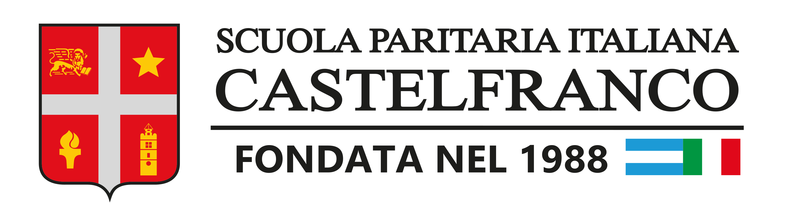

2024-Actualidad-estudio Ingeniería en Sistemas en la Universidad Tecnológica Nacional (UTN)
2023-Durante mi tiempo como pasante en BitLogic, empresa donde comencé durante mis días en la escuela Castelfranco, consolidé mis conocimientos en el desarrollo de páginas web

Habilidades
Lenguajes de Programación: Dominio de [lista de lenguajes específicos, por ejemplo, html, css, javascript].
Resolución de Problemas: Habilidad probada en abordar desafíos complejos y encontrar soluciones eficientes.
Algoritmia: Fuerte comprensión y aplicación de algoritmos para optimizar procesos.
Pensamiento Lógico: Capacidad para abordar problemas de manera lógica y estructurada.
Depuración: Experiencia sólida en identificación y corrección efectiva de errores.
Trabajo en Equipo: Colaborador eficaz, capaz de contribuir positivamente a proyectos grupales.
Adaptabilidad: Rápida adaptación a nuevas tecnologías y entornos de desarrollo.
Comunicación Técnica: Habilidad para comunicar ideas y soluciones de manera clara y efectiva.
Educación:Actualmente cursando [nombre del programa académico] en la Universidad Tecnológica Nacional (UTN).